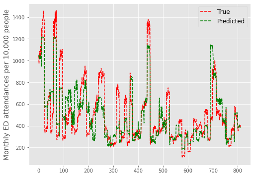
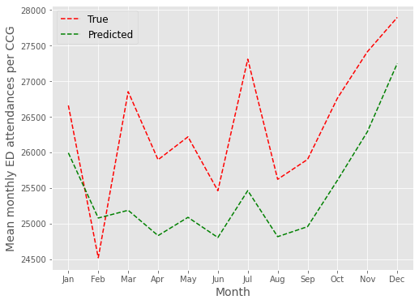
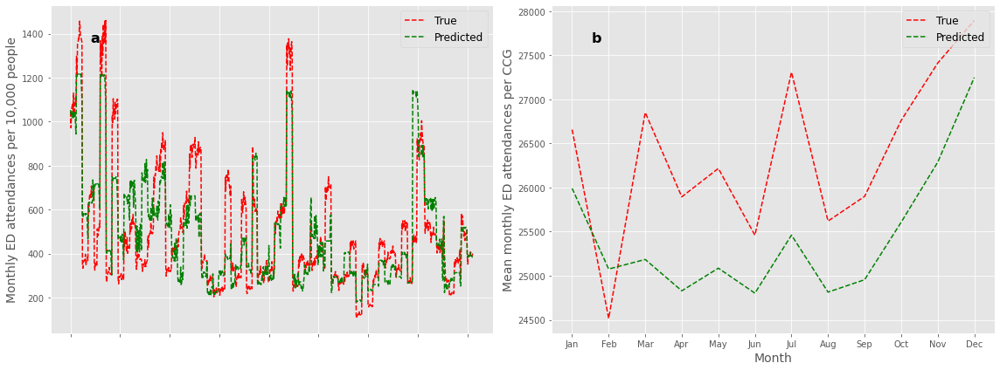

Predicting attendances next year
Contents
Predicting attendances next year#
Overview#
This notebook contains the code to train the MGSR on data from 2018 and forecast ED demand for 2019.
The performance of the MGSR is assessed using the mean absolute percentage error (MAPE).
#turn warnings off to keep notebook tidy
import warnings
warnings.filterwarnings('ignore')
Import libraries#
import os
import pandas as pd
import numpy as np
import pickle as pkl
from sklearn.linear_model import LinearRegression
from sklearn.ensemble import RandomForestRegressor
from sklearn.model_selection import train_test_split
from sklearn.metrics import mean_absolute_percentage_error as mape
import matplotlib.pyplot as plt
%matplotlib inline
plt.style.use('ggplot')
Import data#
dta = pd.read_csv('https://raw.githubusercontent.com/CharlotteJames/ed-forecast/main/data/master_scaled_new.csv',
index_col=0)
dta.columns = ['_'.join([c.split('/')[0],c.split('/')[-1]])
if '/' in c else c for c in dta.columns]
dta.head()
| ccg | month | 111_111_offered | 111_111_answered | amb_sys_made | amb_sys_answered | gp_appt_available | ae_attendances_attendances | population | People | Places | Lives | year | |
|---|---|---|---|---|---|---|---|---|---|---|---|---|---|
| 0 | 00Q | Jan | 406.655830 | 308.945095 | 310.561801 | 234.716187 | 4568.019766 | 1179.855246 | 14.8942 | 97.2 | 99.7 | 94.4 | 2018 |
| 1 | 00Q | Feb | 349.933603 | 256.872981 | 261.756435 | 205.298797 | 3910.918344 | 1075.452189 | 14.8942 | 97.2 | 99.7 | 94.4 | 2018 |
| 2 | 00Q | Mar | 413.247659 | 300.690725 | 303.676215 | 234.716187 | 4051.778545 | 1210.874032 | 14.8942 | 97.2 | 99.7 | 94.4 | 2018 |
| 3 | 00Q | Apr | 349.608595 | 278.140171 | 264.973181 | 203.677924 | 3974.433001 | 1186.166427 | 14.8942 | 97.2 | 99.7 | 94.4 | 2018 |
| 4 | 00Q | May | 361.100544 | 284.419492 | 294.361403 | 227.926437 | 4232.385761 | 1299.297713 | 14.8942 | 97.2 | 99.7 | 94.4 | 2018 |
dta.shape
(1618, 13)
Function to group data#
def group_data(data, features):
features = ['population',
'People', 'Places',
'Lives']
#ensure no identical points in train and test
grouped = pd.DataFrame()
for pop, group in data.groupby('population'):
#if len(group.lives.unique())>1:
#print('multiple CCG with same population')
ccg_year = pd.Series(dtype='float64')
for f in features:
ccg_year[f] = group[f].unique()[0]
ccg_year['ae_attendances_attendances']\
= group.ae_attendances_attendances.mean()
grouped = grouped.append(ccg_year, ignore_index=True)
return grouped
def fit_capacity(dta, features, model):
y = dta['ae_attendances_attendances']
X = dta[features]
model.fit(X,y)
return model
def fit_final(dta, rf1, rf2, m1_features, m2_features):
final = LinearRegression()
#train capactiy model
rf1 = fit_capacity(dta, m1_features, rf1)
#predict monthly attendances
y_pred_1 = rf1.predict(dta[m1_features])
grouped = group_data(dta, m2_features)
y = grouped['ae_attendances_attendances']
X = grouped[m2_features]
rf2.fit(X, y)
y_pred_2 = rf2.predict(dta[m2_features])
X_f = np.vstack([y_pred_1, y_pred_2]).T
y_f = dta['ae_attendances_attendances']
final.fit(X_f,y_f)
print('Combined training score:',final.score(X_f,y_f))
return rf1,rf2, final
#capacity utility
capacity_features = ['gp_appt_available',
'111_111_offered', 'amb_sys_answered']
# '111_111_answered', 'amb_sys_made']
pophealth_features = ['population',
'People', 'Places', 'Lives']
Split data#
train = dta.loc[dta.year==2018]
test = dta.loc[dta.year==2019]
Fit to 2018#
#capacity model
rf1 = RandomForestRegressor(max_depth=5, n_estimators=6, random_state=0)
#population health model
rf2 = RandomForestRegressor(max_depth=5, n_estimators=4, random_state=0)
m1_features = capacity_features
m2_features = pophealth_features
rf1,rf2,final = fit_final(train, rf1, rf2, m1_features, m2_features)
Combined training score: 0.8665135886906001
Predict on 2019#
def stacked_predict(X, models, m1_features, m2_features):
rf1,rf2,final = models
y_pred_1 = rf1.predict(X[m1_features])
y_pred_2 = rf2.predict(X[m2_features])
X_f = np.vstack([y_pred_1, y_pred_2]).T
preds = final.predict(X_f)
return preds
preds = stacked_predict(test, [rf1,rf2,final], m1_features, m2_features)
MAPE#
mape(test.ae_attendances_attendances.values,preds)
0.2539407129802637
Plot#
test['preds'] = preds
fig,ax = plt.subplots(figsize=(8,6))
plt.plot(test.ae_attendances_attendances.values, 'r--', label = 'True')
plt.plot(test.preds.values, 'g--', label = 'Predicted')
plt.ylabel('Monthly ED attendances per 10,000 people', fontsize=14)
plt.legend(loc='best', fontsize=12)
plt.show()

Combine by month for total#
res = pd.DataFrame()
months = ['Jan','Feb','Mar','Apr','May','Jun',\
'Jul','Aug','Sep','Oct','Nov','Dec']
res['True'] = test.ae_attendances_attendances.values * test.population.values
res['Month'] = test.month.values
res['Pred'] = preds * test.population.values
true, pred = [],[]
for month in months:
true.append(np.mean(res.loc[res.Month==month]['True'].values, axis=0))
pred.append(np.mean(res.loc[res.Month==month]['Pred'].values, axis=0))
MAPE#
mape(true, pred)
0.03857707492102586
Plot#
fig,ax = plt.subplots(figsize=(8,6))
plt.plot(months,true, 'r--', label = 'True')
plt.plot(months,pred, 'g--', label = 'Predicted')
plt.legend(loc='best', fontsize=12)
plt.ylabel('Mean monthly ED attendances per CCG', fontsize=14)
plt.xlabel('Month', fontsize=14)
plt.savefig('2019_forecast_mean.png')
plt.show()

Figure for paper#
fig,ax_list = plt.subplots(1,2,figsize=(16,6))
ax=ax_list[0]
ax.plot(test.ae_attendances_attendances.values, 'r--', label = 'True')
ax.plot(test.preds.values, 'g--', label = 'Predicted')
ax.set_ylabel('Monthly ED attendances per 10,000 people', fontsize=14)
ax.legend(loc='best', fontsize=12)
ax.xaxis.set_ticklabels([])
ax.text(0.1, 0.9, 'a', horizontalalignment='center',
verticalalignment='center', fontweight='bold',
fontsize=16,transform=ax.transAxes)
ax=ax_list[1]
ax.plot(months,true, 'r--', label = 'True')
ax.plot(months,pred, 'g--', label = 'Predicted')
ax.legend(loc='upper right', fontsize=12)
ax.set_ylabel('Mean monthly ED attendances per CCG', fontsize=14)
ax.set_xlabel('Month', fontsize=14)
ax.text(0.1, 0.9, 'b', horizontalalignment='center',
verticalalignment='center', fontweight='bold',
fontsize=16,transform=ax.transAxes)
plt.tight_layout()
plt.savefig('2019_forecast.png')
plt.show()
